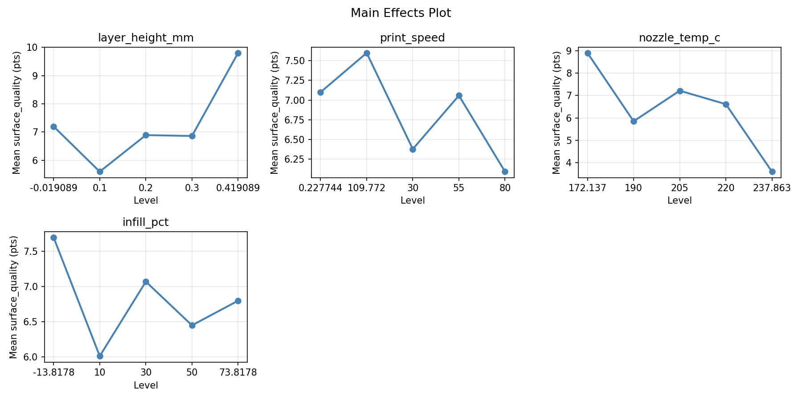
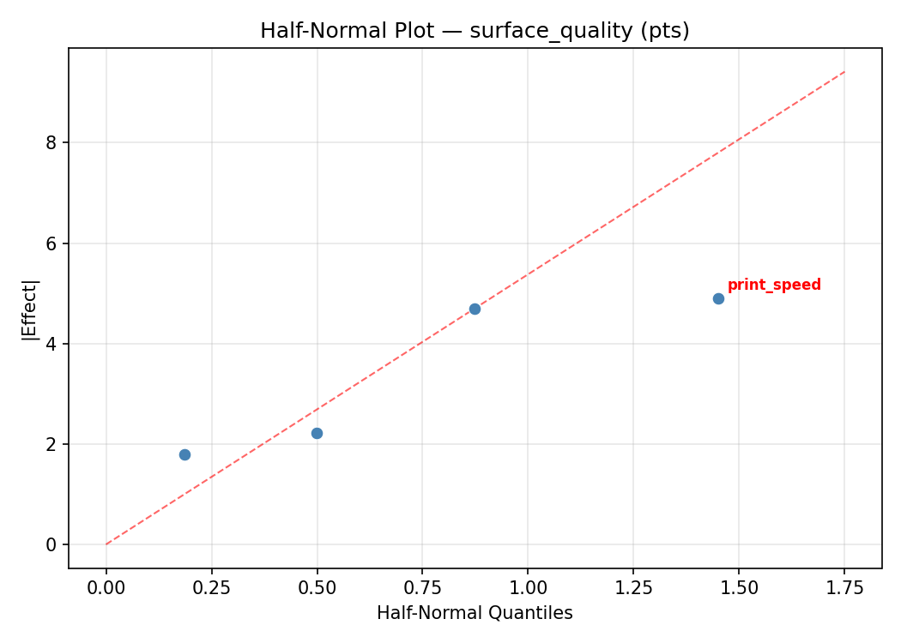
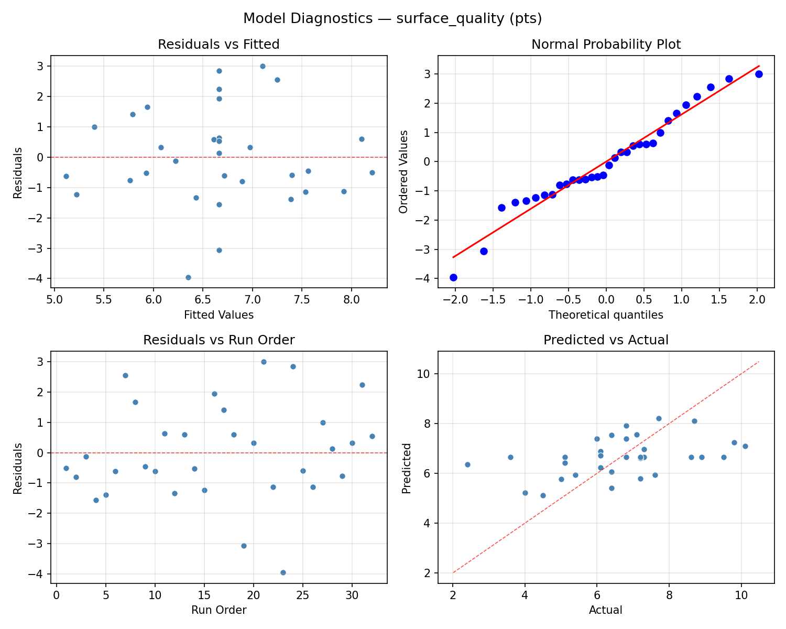
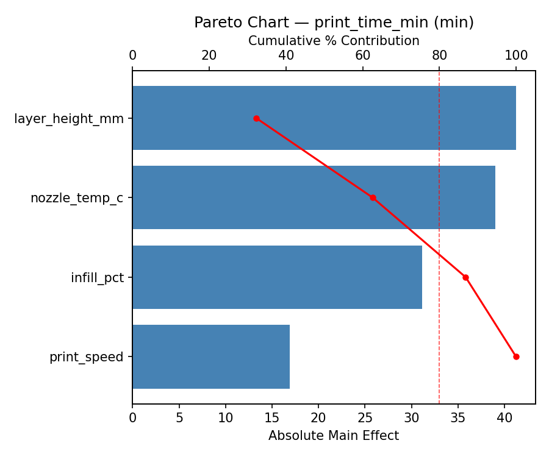
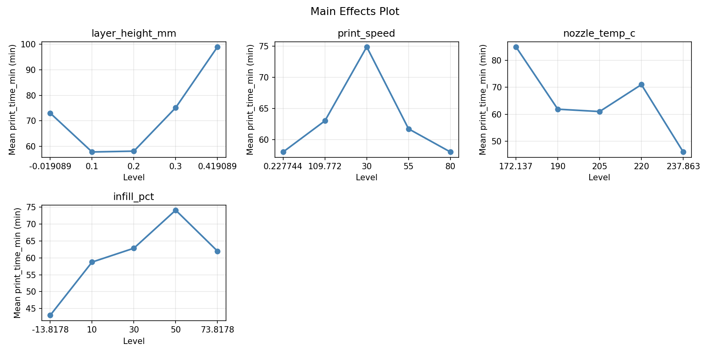
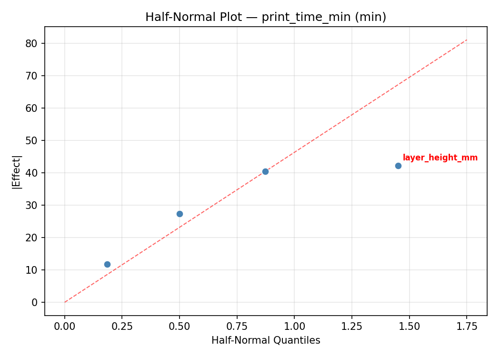
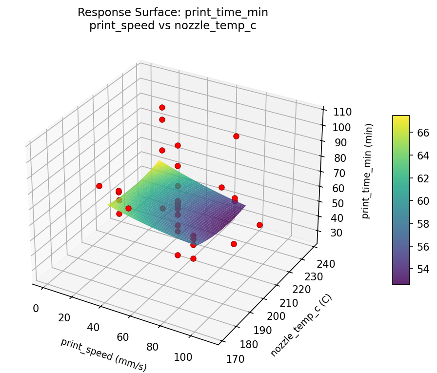
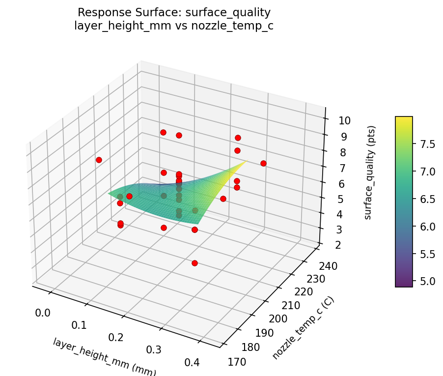
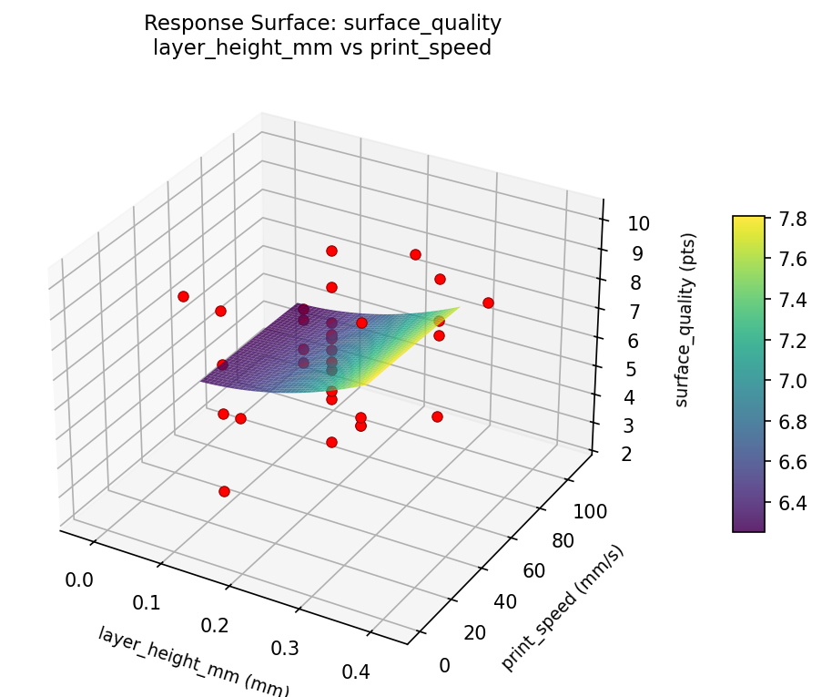
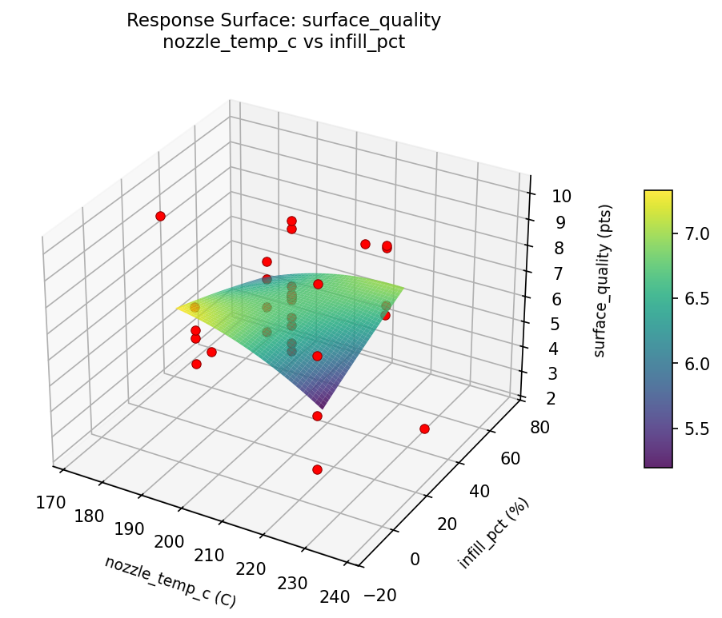

Summary
This experiment investigates 3d print quality tuning. Central composite design to maximize surface quality and minimize print time by tuning layer height, print speed, nozzle temperature, and infill percentage.
The design varies 4 factors: layer height mm (mm), ranging from 0.1 to 0.3, print speed (mm/s), ranging from 30 to 80, nozzle temp c (C), ranging from 190 to 220, and infill pct (%), ranging from 10 to 50. The goal is to optimize 2 responses: surface quality (pts) (maximize) and print time min (min) (minimize). Fixed conditions held constant across all runs include material = PLA, bed temp = 60C.
A Central Composite Design (CCD) was selected to fit a full quadratic response surface model, including curvature and interaction effects. With 4 factors this produces 32 runs including center points and axial (star) points that extend beyond the factorial range.
Quadratic response surface models were fitted to capture potential curvature and factor interactions. The RSM contour plots below visualize how pairs of factors jointly affect each response.
Key Findings
For surface quality, the most influential factors were nozzle temp c (39.4%), infill pct (30.2%), layer height mm (15.4%). The best observed value was 10.1 (at layer height mm = 0.2, print speed = 55, nozzle temp c = 172.137).
For print time min, the most influential factors were nozzle temp c (47.0%), print speed (25.2%), infill pct (21.5%). The best observed value was 27.0 (at layer height mm = 0.2, print speed = 0.227744, nozzle temp c = 205).
Recommended Next Steps
- Run confirmation experiments at the predicted optimal settings to validate the model.
- Consider whether any fixed factors should be varied in a future study.
Experimental Setup
Factors
| Factor | Low | High | Unit |
|---|
layer_height_mm | 0.1 | 0.3 | mm |
print_speed | 30 | 80 | mm/s |
nozzle_temp_c | 190 | 220 | C |
infill_pct | 10 | 50 | % |
Fixed: material = PLA, bed_temp = 60C
Responses
| Response | Direction | Unit |
|---|
surface_quality | ↑ maximize | pts |
print_time_min | ↓ minimize | min |
Configuration
{
"metadata": {
"name": "3D Print Quality Tuning",
"description": "Central composite design to maximize surface quality and minimize print time by tuning layer height, print speed, nozzle temperature, and infill percentage"
},
"factors": [
{
"name": "layer_height_mm",
"levels": [
"0.1",
"0.3"
],
"type": "continuous",
"unit": "mm"
},
{
"name": "print_speed",
"levels": [
"30",
"80"
],
"type": "continuous",
"unit": "mm/s"
},
{
"name": "nozzle_temp_c",
"levels": [
"190",
"220"
],
"type": "continuous",
"unit": "C"
},
{
"name": "infill_pct",
"levels": [
"10",
"50"
],
"type": "continuous",
"unit": "%"
}
],
"fixed_factors": {
"material": "PLA",
"bed_temp": "60C"
},
"responses": [
{
"name": "surface_quality",
"optimize": "maximize",
"unit": "pts"
},
{
"name": "print_time_min",
"optimize": "minimize",
"unit": "min"
}
],
"settings": {
"operation": "central_composite",
"test_script": "use_cases/146_3d_print_quality/sim.sh"
}
}
Experimental Matrix
The Central Composite Design produces 32 runs. Each row is one experiment with specific factor settings.
| Run | layer_height_mm | print_speed | nozzle_temp_c | infill_pct |
|---|
| 1 | 0.2 | 55 | 205 | -13.8178 |
| 2 | 0.1 | 80 | 190 | 50 |
| 3 | 0.3 | 30 | 220 | 10 |
| 4 | 0.3 | 80 | 220 | 50 |
| 5 | 0.2 | 55 | 237.863 | 30 |
| 6 | 0.3 | 30 | 220 | 50 |
| 7 | 0.2 | 0.227744 | 205 | 30 |
| 8 | 0.1 | 80 | 220 | 10 |
| 9 | 0.2 | 55 | 205 | 30 |
| 10 | 0.3 | 80 | 190 | 10 |
| 11 | 0.2 | 55 | 205 | 30 |
| 12 | 0.3 | 30 | 190 | 50 |
| 13 | 0.2 | 55 | 205 | 30 |
| 14 | 0.3 | 80 | 220 | 10 |
| 15 | 0.2 | 55 | 172.137 | 30 |
| 16 | -0.019089 | 55 | 205 | 30 |
| 17 | 0.2 | 55 | 205 | 30 |
| 18 | 0.1 | 30 | 190 | 50 |
| 19 | 0.3 | 80 | 190 | 50 |
| 20 | 0.2 | 55 | 205 | 30 |
| 21 | 0.1 | 30 | 220 | 10 |
| 22 | 0.2 | 55 | 205 | 30 |
| 23 | 0.419089 | 55 | 205 | 30 |
| 24 | 0.1 | 30 | 220 | 50 |
| 25 | 0.2 | 55 | 205 | 30 |
| 26 | 0.1 | 80 | 190 | 10 |
| 27 | 0.2 | 55 | 205 | 73.8178 |
| 28 | 0.2 | 55 | 205 | 30 |
| 29 | 0.3 | 30 | 190 | 10 |
| 30 | 0.2 | 109.772 | 205 | 30 |
| 31 | 0.1 | 30 | 190 | 10 |
| 32 | 0.1 | 80 | 220 | 50 |
Step-by-Step Workflow
1
Preview the design
$ doe info --config use_cases/146_3d_print_quality/config.json
2
Generate the runner script
$ doe generate --config use_cases/146_3d_print_quality/config.json \
--output use_cases/146_3d_print_quality/results/run.sh --seed 42
3
Execute the experiments
$ bash use_cases/146_3d_print_quality/results/run.sh
4
Analyze results
$ doe analyze --config use_cases/146_3d_print_quality/config.json
5
Get optimization recommendations
$ doe optimize --config use_cases/146_3d_print_quality/config.json
6
Multi-objective optimization
With 2 competing responses, use --multi to find the best compromise via Derringer–Suich desirability.
$ doe optimize --config use_cases/146_3d_print_quality/config.json --multi
7
Generate the HTML report
$ doe report --config use_cases/146_3d_print_quality/config.json \
--output use_cases/146_3d_print_quality/results/report.html
Features Exercised
| Feature | Value |
|---|
| Design type | central_composite |
| Factor types | continuous (all 4) |
| Arg style | double-dash |
| Responses | 2 (surface_quality ↑, print_time_min ↓) |
| Total runs | 32 |
Analysis Results
Generated from actual experiment runs using the DOE Helper Tool.
Response: surface_quality
Top factors: nozzle_temp_c (39.4%), infill_pct (30.2%), layer_height_mm (15.4%).
ANOVA
| Source | DF | SS | MS | F | p-value |
|---|
| Source | DF | SS | MS | F | p-value |
| layer_height_mm | 4 | 3.8679 | 0.9670 | 0.255 | 0.9021 |
| print_speed | 4 | 8.7079 | 2.1770 | 0.574 | 0.6856 |
| nozzle_temp_c | 4 | 13.6650 | 3.4162 | 0.901 | 0.4878 |
| infill_pct | 4 | 11.5404 | 2.8851 | 0.761 | 0.5666 |
| Lack | of | Fit | 8 | 32.3352 | 4.0419 |
| Pure | Error | 7 | 26.5388 | | |
| Error | 15 | 58.8739 | 3.7913 | | |
| Total | 31 | 96.6550 | 3.1179 | | |
Pareto Chart

Main Effects Plot

Normal Probability Plot of Effects

Half-Normal Plot of Effects

Model Diagnostics

Response: print_time_min
Top factors: nozzle_temp_c (47.0%), print_speed (25.2%), infill_pct (21.5%).
ANOVA
| Source | DF | SS | MS | F | p-value |
|---|
| Source | DF | SS | MS | F | p-value |
| layer_height_mm | 4 | 229.3929 | 57.3482 | 0.085 | 0.9859 |
| print_speed | 4 | 1942.8214 | 485.7054 | 0.716 | 0.5941 |
| nozzle_temp_c | 4 | 2353.0714 | 588.2679 | 0.867 | 0.5062 |
| infill_pct | 4 | 425.5000 | 106.3750 | 0.157 | 0.9569 |
| Lack | of | Fit | 8 | 2245.2143 | 280.6518 |
| Pure | Error | 7 | 4750.0000 | | |
| Error | 15 | 6995.2143 | 678.5714 | | |
| Total | 31 | 11946.0000 | 385.3548 | | |
Pareto Chart

Main Effects Plot

Normal Probability Plot of Effects

Half-Normal Plot of Effects

Model Diagnostics

Response Surface Plots
3D surfaces fitted with quadratic RSM. Red dots are observed data points.
print time min layer height mm vs infill pct

print time min layer height mm vs nozzle temp c

print time min layer height mm vs print speed

print time min nozzle temp c vs infill pct

print time min print speed vs infill pct

print time min print speed vs nozzle temp c

surface quality layer height mm vs infill pct

surface quality layer height mm vs nozzle temp c

surface quality layer height mm vs print speed

surface quality nozzle temp c vs infill pct

surface quality print speed vs infill pct

surface quality print speed vs nozzle temp c

Multi-Objective Optimization
When responses compete, Derringer–Suich desirability finds the best compromise.
Each response is scaled to a 0–1 desirability, then combined via a weighted geometric mean.
Overall Desirability
D = 0.7093
Per-Response Desirability
| Response | Weight | Desirability | Predicted | Dir |
|---|
surface_quality |
1.5 |
|
7.70 0.6712 7.70 pts |
↑ |
print_time_min |
1.0 |
|
43.00 0.7704 43.00 min |
↓ |
Recommended Settings
| Factor | Value |
|---|
layer_height_mm | 0.2 mm |
print_speed | 55 mm/s |
nozzle_temp_c | 205 C |
infill_pct | 30 % |
Source: from observed run #1
Trade-off Summary
Sacrifice = how much worse than single-objective best.
| Response | Predicted | Best Observed | Sacrifice |
|---|
print_time_min | 43.00 | 27.00 | +16.00 |
Top 3 Runs by Desirability
| Run | D | Factor Settings |
|---|
| #11 | 0.6134 | layer_height_mm=0.3, print_speed=80, nozzle_temp_c=190, infill_pct=50 |
| #8 | 0.6089 | layer_height_mm=0.1, print_speed=80, nozzle_temp_c=190, infill_pct=10 |
Model Quality
| Response | R² | Type |
|---|
print_time_min | 0.0767 | linear |
Full Multi-Objective Output
============================================================
MULTI-OBJECTIVE OPTIMIZATION
Method: Derringer-Suich Desirability Function
============================================================
Overall desirability: D = 0.7093
Response Weight Desirability Predicted Direction
---------------------------------------------------------------------
surface_quality 1.5 0.6712 7.70 pts ↑
print_time_min 1.0 0.7704 43.00 min ↓
Recommended settings:
layer_height_mm = 0.2 mm
print_speed = 55 mm/s
nozzle_temp_c = 205 C
infill_pct = 30 %
(from observed run #1)
Trade-off summary:
surface_quality: 7.70 (best observed: 10.10, sacrifice: +2.40)
print_time_min: 43.00 (best observed: 27.00, sacrifice: +16.00)
Model quality:
surface_quality: R² = 0.1341 (linear)
print_time_min: R² = 0.0767 (linear)
Top 3 observed runs by overall desirability:
1. Run #1 (D=0.7093): layer_height_mm=0.2, print_speed=55, nozzle_temp_c=205, infill_pct=30
2. Run #11 (D=0.6134): layer_height_mm=0.3, print_speed=80, nozzle_temp_c=190, infill_pct=50
3. Run #8 (D=0.6089): layer_height_mm=0.1, print_speed=80, nozzle_temp_c=190, infill_pct=10
Full Analysis Output
=== Main Effects: surface_quality ===
Factor Effect Std Error % Contribution
--------------------------------------------------------------
nozzle_temp_c 4.7000 0.3121 39.4%
infill_pct 3.6000 0.3121 30.2%
layer_height_mm 1.8357 0.3121 15.4%
print_speed 1.8000 0.3121 15.1%
=== ANOVA Table: surface_quality ===
Source DF SS MS F p-value
-----------------------------------------------------------------------------
layer_height_mm 4 3.8679 0.9670 0.255 0.9021
print_speed 4 8.7079 2.1770 0.574 0.6856
nozzle_temp_c 4 13.6650 3.4162 0.901 0.4878
infill_pct 4 11.5404 2.8851 0.761 0.5666
Lack of Fit 8 32.3352 4.0419 1.066 0.4729
Pure Error 7 26.5388 3.7913
Error 15 58.8739 3.7913
Total 31 96.6550 3.1179
=== Summary Statistics: surface_quality ===
layer_height_mm:
Level N Mean Std Min Max
------------------------------------------------------------
-0.019089 1 5.1000 0.0000 5.1000 5.1000
0.1 8 6.4750 1.0990 4.0000 7.3000
0.2 14 6.9357 1.9832 3.6000 10.1000
0.3 8 6.6000 2.1778 2.4000 9.5000
0.419089 1 6.4000 0.0000 6.4000 6.4000
print_speed:
Level N Mean Std Min Max
------------------------------------------------------------
0.227744 1 7.6000 0.0000 7.6000 7.6000
109.772 1 7.7000 0.0000 7.7000 7.7000
30 8 7.1750 1.2453 6.0000 9.5000
55 14 6.6643 2.0140 3.6000 10.1000
80 8 5.9000 1.8655 2.4000 7.3000
nozzle_temp_c:
Level N Mean Std Min Max
------------------------------------------------------------
172.137 1 5.4000 0.0000 5.4000 5.4000
190 8 6.5250 2.3206 2.4000 9.5000
205 14 6.6500 1.7819 3.6000 9.8000
220 8 6.5500 0.7578 5.1000 7.3000
237.863 1 10.1000 0.0000 10.1000 10.1000
infill_pct:
Level N Mean Std Min Max
------------------------------------------------------------
-13.8178 1 3.6000 0.0000 3.6000 3.6000
10 8 6.4375 1.6151 4.0000 9.5000
30 14 6.9857 1.8305 4.5000 10.1000
50 8 6.6375 1.8244 2.4000 8.6000
73.8178 1 7.2000 0.0000 7.2000 7.2000
=== Main Effects: print_time_min ===
Factor Effect Std Error % Contribution
--------------------------------------------------------------
nozzle_temp_c 59.0000 3.4702 47.0%
print_speed 31.6250 3.4702 25.2%
infill_pct 27.0000 3.4702 21.5%
layer_height_mm 8.0000 3.4702 6.4%
=== ANOVA Table: print_time_min ===
Source DF SS MS F p-value
-----------------------------------------------------------------------------
layer_height_mm 4 229.3929 57.3482 0.085 0.9859
print_speed 4 1942.8214 485.7054 0.716 0.5941
nozzle_temp_c 4 2353.0714 588.2679 0.867 0.5062
infill_pct 4 425.5000 106.3750 0.157 0.9569
Lack of Fit 8 2245.2143 280.6518 0.414 0.8803
Pure Error 7 4750.0000 678.5714
Error 15 6995.2143 678.5714
Total 31 11946.0000 385.3548
=== Summary Statistics: print_time_min ===
layer_height_mm:
Level N Mean Std Min Max
------------------------------------------------------------
-0.019089 1 69.0000 0.0000 69.0000 69.0000
0.1 8 61.8750 6.7281 58.0000 78.0000
0.2 14 62.7143 24.0590 27.0000 100.0000
0.3 8 68.1250 23.5277 39.0000 106.0000
0.419089 1 61.0000 0.0000 61.0000 61.0000
print_speed:
Level N Mean Std Min Max
------------------------------------------------------------
0.227744 1 63.0000 0.0000 63.0000 63.0000
109.772 1 43.0000 0.0000 43.0000 43.0000
30 8 74.6250 18.5391 58.0000 106.0000
55 14 64.4286 23.4315 27.0000 100.0000
80 8 55.3750 8.1053 39.0000 63.0000
nozzle_temp_c:
Level N Mean Std Min Max
------------------------------------------------------------
172.137 1 27.0000 0.0000 27.0000 27.0000
190 8 70.5000 22.2068 39.0000 106.0000
205 14 63.9286 20.9925 29.0000 100.0000
220 8 59.5000 7.6718 47.0000 75.0000
237.863 1 86.0000 0.0000 86.0000 86.0000
infill_pct:
Level N Mean Std Min Max
------------------------------------------------------------
-13.8178 1 46.0000 0.0000 46.0000 46.0000
10 8 64.7500 15.4064 47.0000 98.0000
30 14 63.5000 23.4906 27.0000 100.0000
50 8 65.2500 19.5868 39.0000 106.0000
73.8178 1 73.0000 0.0000 73.0000 73.0000
Optimization Recommendations
=== Optimization: surface_quality ===
Direction: maximize
Best observed run: #21
layer_height_mm = 0.2
print_speed = 55
nozzle_temp_c = 172.137
infill_pct = 30
Value: 10.1
RSM Model (linear, R² = 0.0173, Adj R² = -0.1283):
Coefficients:
intercept +6.6625
layer_height_mm -0.0450
print_speed +0.2136
nozzle_temp_c +0.0989
infill_pct -0.0878
RSM Model (quadratic, R² = 0.3625, Adj R² = -0.1626):
Coefficients:
intercept +5.9080
layer_height_mm -0.0450
print_speed +0.2136
nozzle_temp_c +0.0989
infill_pct -0.0878
layer_height_mm*print_speed -0.1000
layer_height_mm*nozzle_temp_c -0.0375
layer_height_mm*infill_pct -0.2000
print_speed*nozzle_temp_c -0.0375
print_speed*infill_pct -0.7250
nozzle_temp_c*infill_pct +0.5125
layer_height_mm^2 +0.1993
print_speed^2 +0.1889
nozzle_temp_c^2 +0.6577
infill_pct^2 -0.1027
Curvature analysis:
nozzle_temp_c coef=+0.6577 convex (has a minimum)
layer_height_mm coef=+0.1993 convex (has a minimum)
print_speed coef=+0.1889 convex (has a minimum)
infill_pct coef=-0.1027 concave (has a maximum)
Notable interactions:
print_speed*infill_pct coef=-0.7250 (antagonistic)
nozzle_temp_c*infill_pct coef=+0.5125 (synergistic)
Predicted optimum (from linear model, at observed points):
layer_height_mm = 0.2
print_speed = 109.772
nozzle_temp_c = 205
infill_pct = 30
Predicted value: 7.1305
Surface optimum (via L-BFGS-B, linear model):
layer_height_mm = 0.1
print_speed = 80
nozzle_temp_c = 220
infill_pct = 10
Predicted value: 7.1079
Model quality: Weak fit — consider adding center points or using a different design.
Factor importance:
1. nozzle_temp_c (effect: 3.8, contribution: 38.1%)
2. print_speed (effect: 3.5, contribution: 34.9%)
3. infill_pct (effect: 1.7, contribution: 17.0%)
4. layer_height_mm (effect: 1.0, contribution: 10.0%)
=== Optimization: print_time_min ===
Direction: minimize
Best observed run: #14
layer_height_mm = 0.2
print_speed = 0.227744
nozzle_temp_c = 205
infill_pct = 30
Value: 27.0
RSM Model (linear, R² = 0.0866, Adj R² = -0.0488):
Coefficients:
intercept +64.0000
layer_height_mm -0.2717
print_speed +6.1356
nozzle_temp_c -0.2081
infill_pct +1.6222
RSM Model (quadratic, R² = 0.3891, Adj R² = -0.1141):
Coefficients:
intercept +60.7728
layer_height_mm -0.2717
print_speed +6.1356
nozzle_temp_c -0.2081
infill_pct +1.6222
layer_height_mm*print_speed -2.6250
layer_height_mm*nozzle_temp_c +2.7500
layer_height_mm*infill_pct -1.2500
print_speed*nozzle_temp_c -6.3750
print_speed*infill_pct -6.6250
nozzle_temp_c*infill_pct +3.7500
layer_height_mm^2 -0.6842
print_speed^2 -1.6217
nozzle_temp_c^2 +6.0867
infill_pct^2 +0.2533
Curvature analysis:
nozzle_temp_c coef=+6.0867 convex (has a minimum)
print_speed coef=-1.6217 concave (has a maximum)
layer_height_mm coef=-0.6842 concave (has a maximum)
infill_pct coef=+0.2533 convex (has a minimum)
Notable interactions:
print_speed*infill_pct coef=-6.6250 (antagonistic)
print_speed*nozzle_temp_c coef=-6.3750 (antagonistic)
nozzle_temp_c*infill_pct coef=+3.7500 (synergistic)
layer_height_mm*nozzle_temp_c coef=+2.7500 (synergistic)
layer_height_mm*print_speed coef=-2.6250 (antagonistic)
layer_height_mm*infill_pct coef=-1.2500 (antagonistic)
Predicted optimum (from linear model, at observed points):
layer_height_mm = 0.2
print_speed = 109.772
nozzle_temp_c = 205
infill_pct = 30
Predicted value: 77.4424
Surface optimum (via L-BFGS-B, linear model):
layer_height_mm = 0.3
print_speed = 30
nozzle_temp_c = 220
infill_pct = 10
Predicted value: 55.7625
Model quality: Weak fit — consider adding center points or using a different design.
Factor importance:
1. print_speed (effect: 58.0, contribution: 51.4%)
2. nozzle_temp_c (effect: 39.2, contribution: 34.8%)
3. infill_pct (effect: 8.0, contribution: 7.1%)
4. layer_height_mm (effect: 7.6, contribution: 6.8%)